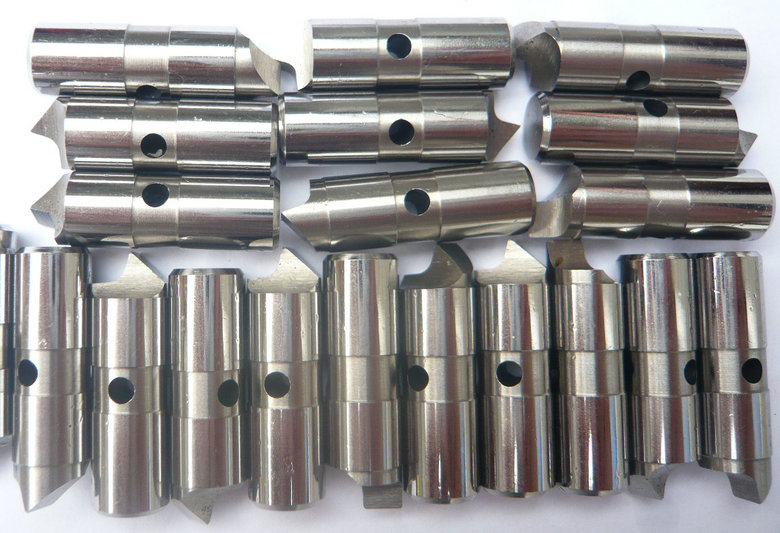
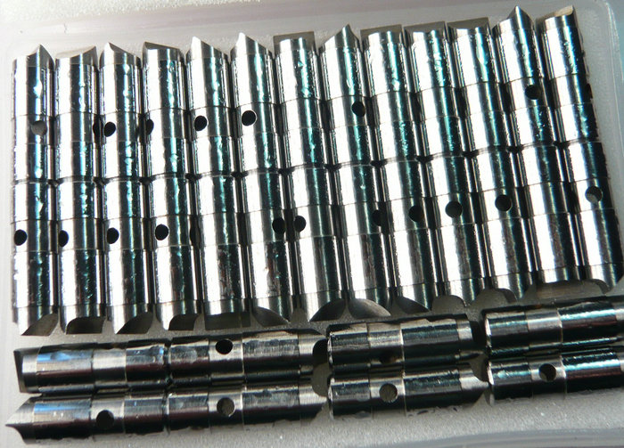

Was ist ein Antriebshund? Was ist ein Stirnseitenmitnehmer? Welchen sollten Sie wählen?
um Werkstücke zwischen Spitzen anzutreiben: den klassischen Antriebshund (Drive Dog) und den modernen Stirnseitenmitnehmer (Face Driver). Beide Systeme haben ihre spezifischen Vor- und Nachteile. Dieser Artikel beleuchtet die Unterschiede und hilft bei der Wahl des richtigen Systems für die eigene Fertigung.


Der Antriebshund – auch Mitnehmer genannt – ist ein traditionelles Bauteil, das auf der Mitnehmerscheibe einer Drehmaschine montiert wird. Er greift in ein angetriebenes Werkstück ein, indem ein am Werkstück befestigter Mitnehmerstift oder ein Mitnehmerring formschlüssig mit dem Hund zusammenwirkt. Bei dieser Methode ist eine separate Mitnehmerverriegelung erforderlich.
Der Stirnseitenmitnehmer dagegen arbeitet nach einem völlig anderen Prinzip. Er wird direkt in der Pinole der Dreh- oder Rundschleifmaschine eingespannt. Mehrere umlaufende Mitnehmerbolzen (meist vier oder sechs) dringen beim Anspannen leicht in die Stirnseite des Werkstücks ein und übertragen das Drehmoment kraft- und formschlüssig. Gleichzeitig sorgt eine zentrale Zentrierspitze für die genaue Positionierung.


Anwendungsempfehlung Der Antriebshund ist heute vor allem noch in folgenden Fällen zu empfehlen: Sehr große und schwere Werkstücke (z. B. Turbinenwellen), Einzelfertigung mit geringen Genauigkeitsanforderungen, Wenn die Stirnfläche des Werkstücks keine Eindrücke verträgt.
Der Stirnseitenmitnehmer ist dagegen die erste Wahl für: Serien- und Massenfertigung (Automobilindustrie, Hydraulik), Teile, die eine vollständige Außenbearbeitung benötigen (z. B. Kolbenstangen), Moderne CNC-Drehautomaten und Rundschleifmaschinen.
- home
- products
- contact
- equipments
- offset driving parts
- half offset drive pins
- central driver parts
- standard/ Fixed driving pins
- Lowered drive parts
- clockwise driver pins
- counterclockwise driving parts
- full width drive pins
- Lasting driver parts
- chisel-edged driving pins
- floating drive parts
- power-operated driver pins
- hydraulic driving parts
- mechanical drive pins
- movable driver parts
- fixed driving pins
- carbide driver pins
- tool steel S7 driving parts
- changeable pins
- face drive pins